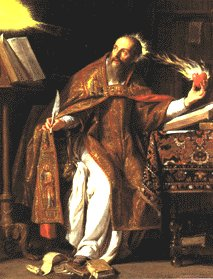
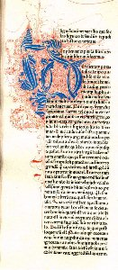
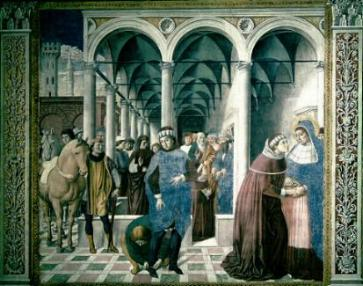
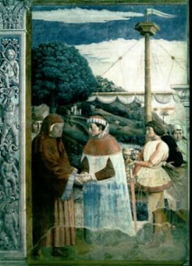

SEDUÇÃO DO SEXO
– Apesar de sua dedicação aos estudos, encontrou no meio de tanta
volúpia e sensualidade, aquela mulher que ele amou e
SEDUÇÃO DO SEXO
– Apesar de sua dedicação aos estudos, encontrou no meio de tanta
volúpia e sensualidade, aquela mulher que ele amou e
que também foi desesperadamente
amado por ela, sua companheira de pecado durante 15 anos de vida que mantiveram
em comum. Dessa união nasceu uma criança que recebeu o nome de Adeodato.
Mônica agora tinha dois grandes e graves
problemas para solucionar. PatrÃcio, seu marido, que continuava pagão e volúvel,
preocupando-se exclusivamente com os afazeres e as distrações, e seu filho,
que se enveredara pelo caminho do pecado, vivendo amasiado com uma mulher com a
qual já tinha uma criança. Era verdadeiramente uma situação desesperadora,
considerando aquela alma sensÃvel de esposa e mãe, dedicada exclusivamente a
famÃlia, ver cada dia a dor transpassar-lhe o coração com a lança da
angústia, ao sentir aumentar o abismo em que se precipitavam os seus entes
queridos, cada vez mais se afastando de Deus.
Mas ela não desanimou, continuou fervorosamente
com as orações suplicando a misericórdia Divina para o seu marido e seu filho,
rezando perseverantemente para que DEUS se apiedasse dos pecados deles e lhes
concedessem o perdão, infundindo naqueles dois corações empedernidos, à luz
da responsabilidade e da razão, transformando aquelas vidas, proporcionando-lhes
descobrir a sublimidade do amor Divino.

CONVERSÃO DE SEU PAI PATRÃCIO
- Como resultado de suas constantes orações, no ano 371,
PatrÃcio converteu-se ao cristianismo, pedindo para
ser batizado. Este foi o coroamento
feliz de um trabalho longo e insano, que penosamente ela desenvolveu junto ao seu
esposo, doutrinando-o com as verdades de DEUS.
Contudo, os anos já tinham levado a mocidade
de PatrÃcio. Com 60 anos de idade, a saúde já declinava no ocaso da vida. Contraiu
uma grave moléstia que o levou ao leito e debilitou gravemente a sua resistência
fÃsica. Acabou por não resistir, morrendo pouco tempo depois.
Mas a conversão dele foi uma das maiores
alegrias de Mônica, que nos momentos de tristezas pela ausência do marido,
a consolava, na certeza de que ele tinha alcançado o perdão do CRIADOR,
e isto aliviava todos os seus sacrifÃcios e as dificuldades que encontrava,
confortando-lhe o espÃrito, proporcionando-lhe um novo e forte
alento, para seguir na luta, agora para a conversão de seu filho.
Agostinho já estava há algum tempo
em Cartago quando soube da morte do pai. Resignou-se rapidamente e de certa
forma, até rejubilou-se com o acontecimento, pois o seu pai depois de convertido,
representava um freio em sua libertinagem. Aquelas recomendações e conselhos
que insistentemente lhe transmitia, agora terminaram para sempre.
Pensava: "O estudante de Cartago obtivera um brilhante êxito, que superou
a expectativa dos pais, e por isso, pelo fato de ter plenamente correspondido aos desejos
deles, achava-se como que, dispensado da obrigação do reconhecimento".
Por esta manifestação estranha, pode-se
imaginar o posicionamento anormal de seu espÃrito, que revelava um mal caráter
e uma pessoa egoÃsta, com um sentimento mesquinho e totalmente vazio de valores
morais. Na verdade, Agostinho estava envolvido por uma terrÃvel confusão de idéias,
sem saber qual o caminho a seguir.
BUSCA DE UM CAMINHO ESPIRITUAL
- Possuindo um temperamento irrequieto e instável, decidiu
partir para a pesquisa, iniciando a
busca da verdade, procurando estudar e observar todas as religiões,
principalmente aquelas onde constava o nome do SENHOR. Todavia é importante
esclarecer, que ele somente procurava as religiões que tinham JESUS CRISTO como
Salvador, mas não queria saber da Cruz do Redentor. Com isto o que ele desejava
encontrar, era uma comodidade espiritual, ter uma religião "fácil",
que combinasse com o seu atual modo de viver. E desta forma, gradativamente foi-se
afastando do cristianismo, até que resolveu entrar na seita dos Maniqueus.
Inscreveu-se como "ouvinte", mas com
pouco tempo, graças à sua inteligência viva e a fluente maneira de se expressar, ocupou
a cátedra para fazer sermões e exaltar sua nova religião. E nas homilias sempre citava
os nomes de JESUS CRISTO e do ESPÃRITO SANTO, muito embora no conjunto das
palavras, só denotassem erros grosseiros a respeito da doutrina Divina.
Contudo Mônica não desanimava. Lutava com
todas as armas que podia, realizando um esforço gigantesco para converte-lo, mas
ele se mantinha irredutÃvel, orgulhoso e seguro de seus conhecimentos. Ela insistia.
Numa ocasião, recorreu ao Bispo de Tagaste pedindo a sua intercessão. O prelado
conhecia Agostinho desde a infância, sabia da dureza de seu gênio e de sua obstinação
férrea em defender as suas teorias. Por isso sugeriu-lhe que por hora deixasse
as coisas assim, que continuasse com suas suplicantes orações,
DEUS saberia agir no momento certo.
Mas o tempo corria ligeiro e a conversão não
acontecia.
UM MELHOR TRABALHO NA ITÃLIA
– Ele, por sua vez, vendo que financeiramente não conseguia
se realizar em Cartago, resolveu partir para
Roma em busca de um campo de trabalho mais
amplo com melhores condições e onde poderia concretizar seus ideais.
Sua mãe, ao saber da notÃcia, ficou desesperada
e foi a seu encontro. Conversou e insistiu com fortes argumentos, apelando
inclusive para o sentimento dele, a fim de que não viajasse. Não adiantou.
Partiu de navio para a Itália, depois de ardilosamente deixá-la
rezando na capelinha de São Cipriano, que ficava próximo ao cais de
embarque na praia. Mônica de tanto rezar, adormeceu... Quando acordou,
procurou pelo filho, mas já era tarde. O navio estava longe. Nem se conseguia
distinguir a sua silhueta no horizonte. Triste e cansada, voltou para Tagaste.
Ele chegando a Roma, encontrou hospitalidade
na casa de uma pessoa que também professava a religião "maniqueu". Contudo,
a vida em Roma estava muito difÃcil, isto porque, embora tivesse muitos alunos,
na hora de receber o dinheiro correspondente ao seu trabalho, poucos pagavam,
arrecadando um valor que praticamente não atendia as suas necessidades.
Certo dia, surgiu uma imprevisÃvel oportunidade.
De Milão enviaram uma carta ao Prefeito de Roma, solicitando um professor de
retórica para a Escola da cidade.
A notÃcia espalhou-se e ele tomou conhecimento
do fato por intermédio de amigos que tinham relações na municipalidade.
Pessoalmente, foi conversar com o Prefeito e
solicitou o referido emprego. SÃmaco, que era o Chefe Municipal, para testar a
sua capacidade intelectual, propôs-lhe um tema sobre o qual deveria discursar e
argumentar. Foi fácil para ele, pois era a sua especialidade. Aprovado no
teste, seguiu para Milão no ano 384.
Lá, trabalhando sério e com dedicação, em pouco
tempo fez fortuna. Instalou-se convenientemente e chamou a sua companheira e
seu filho Adeodato, que tinham ficado em Cartago, passando a viver numa casa
próximo à Escola.
As noticias circularam rápidas. O êxito de
Agostinho e sua decisão de chamar a amante chegaram aos ouvidos de Mônica,
que imediatamente embarcou para Milão levando consigo NavÃgio, seu filho.
Foi uma surpresa para ele, pois imaginava que
onde se encontrava, jamais seria incomodado por sua mãe. Mas a verdade é que
ela seguiu para a Itália, movida por uma poderosa inspiração, que lhe deu forças
e estÃmulo para continuar na luta e alcançar o maior objetivo de sua vida:
a conversão de Agostinho.
 Próxima Página
Próxima Página
Página Anterior
Retorna ao Ãndice